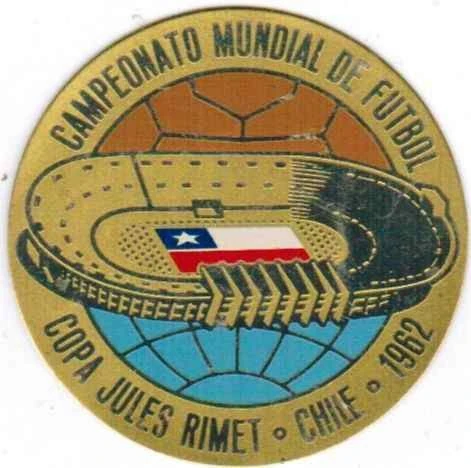

Chile por fin logró el anhelado sueño de ser anfitriones de una competencia de talla mundial como lo son los Juegos Panamericanos y Parapanamericanos, hito que no ocurría desde que en 1962 fuimos los organizadores del Mundial de Fútbol.
Pero pese al extasiante ambiente, muchos deportistas que nos representan aprovecharon para hacer publicas sus demandas por una falta de apoyo financiero. Una exigencia que no es nueva en el rubro deportivo nacional, y que podría, como consecuencia, traer obstáculos a la preparación y rendimiento de los atletas nacionales.

Pero, ante la falta de cuantificación de estas quejas, cabe preguntarse si son una realidad o mera opinión.
Los datos de ejecuciones de presupuestos desde 2015 hasta 2020 del Instituto Nacional del Deporte muestran una tendencia a gastar menos de un tercio de los recursos disponibles. Esto cambió tras los Juegos Panamericanos de Lima 2019, cuando se entregó el relevo a Chile para ejecutar las preparaciones de lo que seria la décimonovena edición de la competencia continental, en su propio territorio.
Pese a que el presupuesto comenzó a ejecutarse casi en su totalidad, esto no significo un aumento real en los aportes directos a las federaciones de deportistas de elite en Chile.
Finalmente, Chile rompió el record de medallas obtenidas en la pasada edición del evento, pero estancándose en el mismo octavo puesto del medallero que la vez anterior.
Desde Lima 2019, entre los primeros 8 puestos de las naciones competidoras Chile fue la que menor inversión estatal brindó exclusivamente a sus federaciones deportivas.
Por lo tanto, en Chile sí existe un déficit de financiación a los deportistas profesionales, uno que, como demuestra la correlación y casi coincidencia entre los fondos otorgados por cada país y su posición en el medallero, juega un rol en el rendimiento de los atletas que nos representan a nivel internacional.
¿Existe una falta de apoyo comprobable a nuestros deportistas?
Los datos de ejecuciones de presupuestos desde 2015 hasta 2020 del Instituto Nacional del Deporte muestran una tendencia a gastar menos de un tercio de los recursos disponibles. Esto cambió tras los Juegos Panamericanos de Lima 2019, cuando se entregó el relevo a Chile para ejecutar las preparaciones de lo que seria la décimonovena edición de la competencia continental, en su propio territorio.

Pese a que el presupuesto comenzó a ejecutarse casi en su totalidad, esto no significó un aumento real en los aportes directos a las federaciones de deportistas de elite en Chile.
grafico 2 (agu, por hacer)Finalmente, Chile rompió el record de medallas obtenidas en la pasada edición del evento, pero estancándose en el mismo octavo puesto del medallero que la vez anterior.

Desde Lima 2019, entre los primeros 8 puestos de las naciones competidoras, Chile fue la que menor inversión estatal brindó exclusivamente a sus federaciones deportivas.